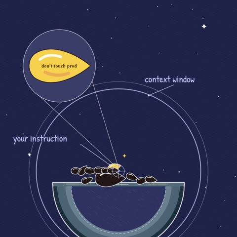

What’s happening
Every message adds tokens. The model can only “see” what fits in its context window: your instructions, the conversation, tool results, files. It all competes for the same space.
Your first instruction sinks. As a session grows, what you said at the start ends up buried in the middle of a long context.
The middle gets the least attention. Language models use information at the start and end of a long input more reliably than information in the middle. This is the “lost in the middle” effect. So long before the window is technically full, the thing you care about can stop being followed.
The three fixes
- 1Compact.Summarise long sessions into one compact state (decisions made, open tasks, constraints) and continue from that instead of the full transcript. Many coding agents have a built-in compact command. Use it before things get hazy, not after.
- 2Re-pin.Keep the rules that must never be broken at the edges of the context: in the system prompt or a pinned instructions file, and restate them next to the task. Example: put
never touch prodin the project’s instructions file, not in message 3 of a 200-message chat. - 3Retrieve.Don’t paste everything “just in case”. Fetch only what this task needs (the 3 relevant files, the one doc section) at the moment it’s needed. Less, but relevant, beats more.
Quick checklist
- Long session? Compact it.
- Critical rule? Put it in the system prompt / instructions file.
- Big paste? Replace it with targeted retrieval.
- Agent “forgot”? Check where the instruction sits, not just whether it’s there.
Try it: fill the window
▶ interactiveYour rule never touch prod is message 1. Add messages and watch where it ends up. Faded seeds are what the model tends to pay less attention to.
Now try a fix
Press Add message a few times.
A toy model: the fading is a simplified picture of the “lost in the middle” effect, not a measurement.
Source for the middle effect: Liu et al., “Lost in the Middle: How Language Models Use Long Contexts” (2023).